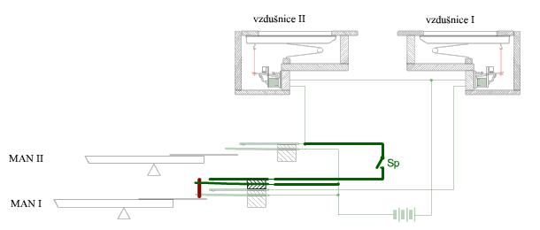
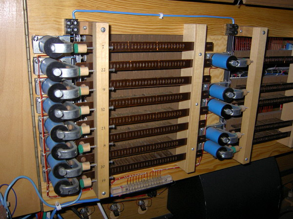
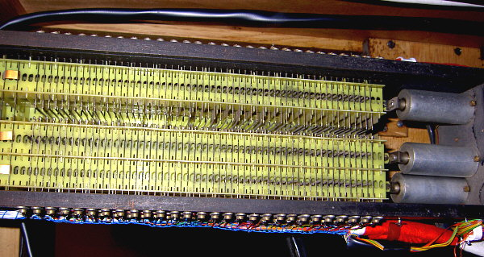
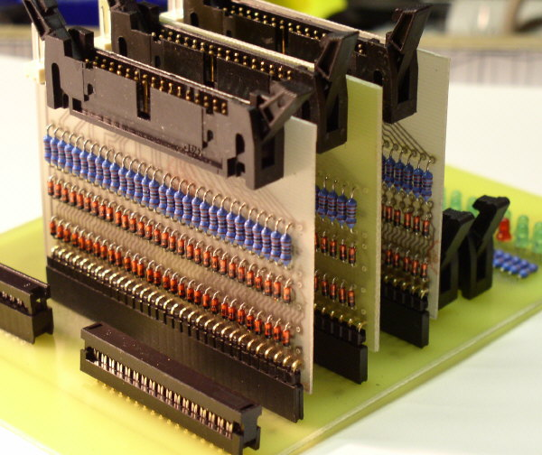
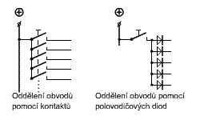
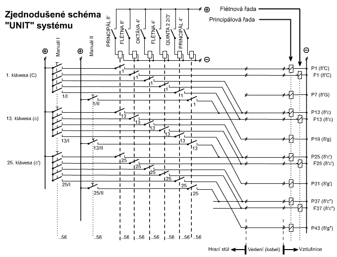

Funkce spojek v elektrické traktuøe je stejná, jako u spojek mechanickıch èi pneumatickıch. Spojky zajiš�ují jednosmìrné propojení klaviatur navzájem (napø. II/I èi I/P) nebo pøipojení tónù èi rejstøíkù v jiné poloze (superpojky a subspojky) èi z jiného stroje (transmise èi extenze – viz popis v úvodní kapitole o trakturách). Elektrické spojky se nepou�ívají pouze u nástrojù s elektrickou trakturou, najdeme je i u nástrojù s elektropneumatickou trakturou èi u nástrojù jinak èistì mechanickıch. U novıch nástrojù se elektrická spojka buduje z nìkolika dùvodù:
Dalším pøípadem, kdy se setkáme s elektrickou spojkou u jiného typu traktury jsou staré a rekonstruované nástroje. Tady jsou dùvody pro pou�ití elektrické spojky následující:
Realizace spojek je (ve srovnání s mechanickou a pøedevším pneumatickou
trakturou) u elektrické traktury pomìrnì jednoduchá, spoèívá v elektrickém
propojení obvodù traktur spojovanıch tónù. Vlastní propojení se provede
sepnutím kontaktù spojkového aparátu. Konstrukce spojkového aparátu
mù�e bıt elektromechanická (v podstatì mnohokontaktní elektromagnetické
relé - viz dále, poèet párù kontaktù odpovídá poètu propojovanıch tónù
tj. 30 a� 32 u spojky do pedálu a 56 a� 61 u spojek manuálù) nebo elektronická
(diodovı èi tranzistorovı systém bez pohyblivıch souèástí). |
Pro pochopení funkce spojek je nejnázornìjší jejich
provedení z èistì kontaktních prvkù (bez polovodièovıch souèástek èi jiné
elektroniky). U nejjednodušší elektrické traktury klávesa spíná kontakt
a ten øídí tok elektrického proudu k akènímu èlenu – elektromagnetu, kterı
otevírá tónovı ventil: |
Animace ukazuje oddìlené obvody tónovıch traktur
u dvoumanuálového nástroje. Spoleènı je pouze napájecí zdroj (symbolizovanı
schématickou znaèkou baterie). Stisk klávesy ka�dého z manuálù zpùsobí
otevøení pøíslušného ventilu v odpovídající vzdušnici. Doplòme teï schéma
zapojení traktury o spojku: |

Na obrázku jsou zvıraznìny souèásti, nutné pro realizaci
spojky II/I. U klávesy prvního manuálu pøibude jeden
pár kontaktù (pro ka�dou další funkci klávesy potøebujeme v kontaktním
provedení samostatnı kontakt, ka�dá další spojka tedy znamená další pár).Tento
kontakt je mechanicky svázanı s tónovım kontaktem (spíná souèasnì, technické
øešení je popsáno v kapitole o komponentech
elektrické traktury). Spínaè s oznaèením Sp je kontakt
spojky, slou�í k jejímu zapínání a vypínání a je samostatnı pro ka�dı
spojovanı tón (klávesu), jen tak mù�e bıt zajištìno oddìlení obvodù kláves
navzájem. U manuálu se tedy tento spínaè opakuje 56 a� 61 krát. Všechny
spojkové kontakty jsou ovládány souèasnì øídicím prvkem spojky (napø.
sklopkou s oznaèením II/I). Pøímé (napø. mechanické) ovládání by vzhledem
k poètu kontaktních per bylo obtí�né, pou�ije se proto mezièlen – spojkovı
aparát (v podstatì mnohopólové elektromagnetické relé). Jednu z jeho mo�nıch
konstrukcí ukazuje následující animace a skuteèná provedení jsou zachycena
na fotografiích: |


Animace je zjednodušená, spojkovı aparát je ve skuteènosti delší (párù kontaktù je vìtšinou 30, u pedálové spojky pou�ijeme jeden aparát, u manuálové spojky dvojici se spoleènım ovládáním). Nevıhodou spojkového relé je znaèná slo�itost, citlivost na seøízení kontaktù a nároèná údr�ba (èištìní, vımìna kontaktù…). Proto se u novìjších systémù pou�ívá pro oddìlení obvodù diodové matice (polovodièová dioda propouští proud jen jedním smìrem, chová se tedy obdobnì jako jednosmìrnı zpìtnı ventil u pneumatiky) ve spojení s tranzistorovımi spínaèi (tranzistor se chová podobnì jako kontakt relé, nemá ale �ádné pohyblivé souèástky):  Diodová matice spojky (pro 30 tónù, spojky do pedálu). Následující animace ukazuje èinnost spojky. Stisk klávesy v prvním manuálu (MAN I) otevírá v závislosti na stavu spínaèe Sp buïto jen ventil ve vzdušnici I nebo oba ventily ve vzdušnicích I a II souèasnì: |
Jednosmìrnost spojky je zajištìna oddìlením obvodù pøidanım (druhım) kontaktem u klávesy prvního manuálu MAN I. Bez ohledu na polohu spínaèe Sp klávesa druhého manuálu MAN II ovládá pouze ventil ve vzdušnici II, pokud není klávesa v MAN I stisknuta, obvody jednotlivıch vzdušnic jsou navzájem izolovány rozpojenım kontaktem na klávese. Pro ka�dou spojku proto potøebujeme další kontakt, v pøípadì, �e by jejich poèet pøesáhl únosnou mez (cca 8, napru�ení kontaktù ztì�uje chod klávesy, obtí�ná je regulace souèasného spínání apod.), je vıhodnìjší oddìlení obvodù pomocí polovodièovıch diod: |
Na
obrázku je srovnání obou zpùsobù. Zatímco v kontaktním provedení klávesa
ovládá pìtici kontaktù (jeden tónovı - pøímı a ètyøi pro další funkce,
napø. spojky, extenze apod.), staèí u zapojení s diodami kontakt jeden.
Diody propouštìjí proud jen v jednom smìru (zde zleva doprava - od klávesy
k dalším obvodùm), pokud se na nìkterı obvod pøivede proud zprava, diodou
neprojde a k dalším obvodùm se tak nedostane. |
Samostatnou kapitolou mezi spojkami jsou multiplexní varhany (UNIT systém). U tìchto varhan se z praktickıch dùvodù pou�ívá témìø vıhradnì elektrická traktura, u ní� je realizace spojek (extenzí a transmisí, na nich� jsou v principu multiplexní varhany zalo�eny) nejjednodušší. Zapínání rejstøíkù se u UNIT varhan dìje stejnì, jako zapínání spojky u varhan vystavìnıch. Ka�dı ovladaè rejstøíku zapíná spojkové relé, které má tolik kontaktù, kolik je kláves. Toto relé pøipojí klaviaturu na pøíslušnı úsek píš�alové øady (podle polohy zapnutého rejstøíku). Pro ka�dı extenzovanı rejstøík potøebujeme z vıše popsaného dùvodu oddìlení obvodù samostatnı kontakt na klávese, pokud je øad více ne� cca 8, je lepší vlo�it ke klávesám tónové mezirelé (klávesa bude mít jen jeden kontakt, kterı sepne proud do cívky mezirelé a to teprve spojí svazek kontaktù). |

Na obrázku je elektrické schéma èásti traktury "UNIT" - multiplexního nástroje se dvìmi manuály a šesti rejstøíky, které jsou extenzovány ze dvou píš�alovıch øad - principálové a flétnové. Zobrazeny jsou pouze tøi klávesy v ka�dé klaviatuøe (velké C, malé c a jednoèárkované c') a jim odpovídající èást vedení, kontaktù vèetnì elektromagnetù ve vzdušnici. První manuál ovládá celkem 5 rejstøíkù, ka�dá klávesa má tedy pìtici kontaktù, u druhého manuálu je kontakt jen jeden. Relé pro spínání rejstøíkù mají tolik kontaktù, kolik je kláves (v tomto pøípadì 56, naznaèeno symbolicky ve schématu). Elektromagnety pro ovládání ventilù píš�al jsou znaèeny znaèkou píš�alové øady (P pro principálovou a F pro flétnovou) a poøadovım èíslem píš�aly v øadì. Stiskneme-li klávesu velké C v prvním manuálu, v závislosti na zapnutém rejstøíku bude ovládat magnet pod píš�alou è. 1 (Principál 8'), è. 13 (Oktáva 4'), è. 19 (Kvinta 2 2/3') v principálové øadì a è. 1(Flétna 8') nebo è. 13 (Flétna 4') ve flétnové øadì. Ve schématu jsou dobøe vidìt rejstøíky, které jsou napojeny v jiné ne� základní poloze (oktávy a kvinty), jsou to ty, u kterıch je spoj mezi rejstøíkovım relé a vıstupní svorkou hracího stolu veden šikmo, ne pøímo. |
U souèasnıch systémù elektrickıch traktur s klávesovım
kodérem v hracím stole (v podstatì zaøízením na bázi poèítaèe, kterı je
s akèními èleny v nástroji propojen pomocí sbìrnice tvoøené tenkım kabelem,
optickım vláknem apod. viz úvodní kapitola o elektrické
traktuøe) je realizace spojek zále�itostí úpravy software kodéru (a
pøípadnì pøipojením ovládaèe pøíslušné spojky – vypínaèe, sklopky apod.).
Tato zdánlivá jednoduchost vede èasto ke snaze disponovat do nástroje
znaènı poèet spojek (nejen klaviatur navzájem, ale také spojek v jinıch
ne� základních polohách, spojek jen nìkterıch rejstøíkù apod.) s cílem
jednak „opticky“ zvıšit poèet rejstøíkù, jednak vyhovìt zákazníkovi (ve
smyslu mít co nejdokonalejší a nejslo�itìjší nástroj pøi relativnì nízkıch
nákladech na další rejstøíky). Vyu�ití takového mno�ství spojek pøi høe
je èasto neúèelné a� problematické, málokdy toti� vedou k vytvoøení nové
barvy zvuku nástroje, spíše zvyšují hlasitost a zhutòují zvuk. |
Na souvisejících stránkách jsou popsány komponenty elektrické traktury, tónová traktura a rejstøíková traktura. Tématiku spojek rovnì� popisují stránky o mechanickıch spojkách a pneumatickıch spojkách. |
Poznámka: Tato stránka je souèástí Anatomie varhan ®, © Ing. Petr Bernat, Animace © Ing. Petr Bernat